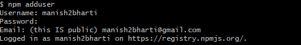

What is this tutorial about?
So in this article, you are going to learn:-
- How to make nodejs cli (command line interface) apps.
- How to publish your own NPM package.
Pre-Requisites
Just a little bit of Nodejs. I’ve tried to make it as beginner friendly yet fast-paced (for amateurs who skip to code). One more very important pre-requisite would be your information as we will be creating a resume app on the command line.
So Let’s Get Started
This Tutorial is going to consist of 2 parts.
- Making the cli app
- Publishing it as an NPM package.
Making the cli app (Part-1)
We are going to create a simple menu in cli from which the user can choose what do they want to know about us. So the list will consist of options like Past Experience, Education Qualification.
For this, we will use the Inquirer.js package. It has a simple prompt-then routine which is very intuitive.
We will also use Chalk.js as I’m very obsessed with coloured console.logs
A code this short would create a question prompt in cli.
The prompt object consists of keys such as type, name etc.
For now, we need to know only 2 those will be the message(the question to be asked) and choices( the options we provide).
Structured Approach
Instead of filling the options array with each option I used a JSON to store all my resume information which can be parsed and supplied by the app.
STEP 1:-
The JSON file
Write this code in a separate resume.json file and save it with your own qualifications. Please don’t use the one in this pic.
After that, we will just use the inquirer to make the question-answer format.
STEP 2:-
Name your package and install its dependencies.
npm init
Now here be careful while giving the name field as this will be the name of your package when you upload it to the npm site. MAKE SURE IT’S UNIQUE
Now install your package dependencies i.e chalk and inquirer.
npm i --save chalk inquirer
CLI APP
So we will give them 4 options and an option to exit and go back at the 2nd stage. Go back will just call the parent function again. Nothing so fancy. Here’s the complete app code.
STEP 3:-
Save this code in index.js.
#!/usr/bin/env node
"use strict";
var inquirer = require("inquirer");
var chalk = require("chalk");
var response = chalk.bold.green;
var resume = require("./resume.json");
var resumePrompts = {
type: "list",
name: "resumeOptions",
message: "What do you want to know about me?",
choices: [...Object.keys(resume), "Exit"]
};
function main() {
console.log("Hello,My name is Manish and welcome to my resume");
resumeHandler();
}
function resumeHandler() {
inquirer.prompt(resumePrompts).then(answer => {
if (answer.resumeOptions == "Exit") {
return;
}
var option = answer.resumeOptions;
console.log(response("--------------------------------------"));
resume[`${option}`].forEach(info => {
console.log(response("| => " + info));
});
console.log(response("--------------------------------------"));
// console.log(resume[`${option}`]);
inquirer
.prompt({
type: "list",
name: "exitBack",
message: "Go back or Exit?",
choices: ["Back", "Exit"]
})
.then(choice => {
if (choice.exitBack == "Back") {
resumeHandler();
} else {
return;
}
});
});
}
main();
Key Points:-
- #!/usr/bin/env node -This line is important as our package is going to run from cli and we need to know the environment in the script.
- response() function just shows my OCD with chalk module.
STEP 4:-
Test if your code works.
node index.js
If your code doesn’t work for some reasons check with the repo link given above. If it does then, HURRAYYYY!!! You just made a cli app for your resume. You should clap for yourself.
THE NPM PACKAGE (PART-2)
Now that we have our cli app running lets’ deploy it as an NPM package.
Step 1-
Register yourself on npmjs.com. To be able to publish NPM packages you have to make an account on npmjs. Easy Step. Make the account and come back here.
Step 2-
Add a user to you npm cli tool. Now you have to link the npm cli to your npmjs account. In your terminal type
npm adduser
After that fill the prompts as requested, Example:-
Username- it is you npm username.
Password- It is your npmjs account password.
STEP 3-
Making your project ready for publishing. Now add these following lines to the package.json file of your cli app. This step will make your app to be accessible directly from the command line.
<your package name> can be seen in the package.json under the “name” key
"bin": {
"<your package name>": "./index.js"
}
STEP 4-
Add a readme.md to your project and write whatever you want to about it. This will be shown on the package page.
STEP 5-
PUBLISH THE PACKAGE. Go to the package directory, open up the terminal inside it and run
npm publish --access=public
AND ITS DONE. You have successfully published the package.
STEP 6(Optional)-
It is optional but important to know how to update your package online. When you start with your npm project it is by default 1.0.0 and published as same. But if you need to change something in it and re-publish the new changes YOU HAVE TO UP THE VERSION by semantic versioning.
If it is a patch(very small change). You run
npm version patch
This will make your package version 1.0.1 and increment in future accordingly.
If you have done a considerable change. You run
npm version minor
and your package will be now 1.1.0 and for a major change, you run.
npm version major
and you now will have 2.0.0.
After that just hit npm publish and you have your package updated on npmjs.
Let’s Test It.
It works… I hope it worked out for you guys too.